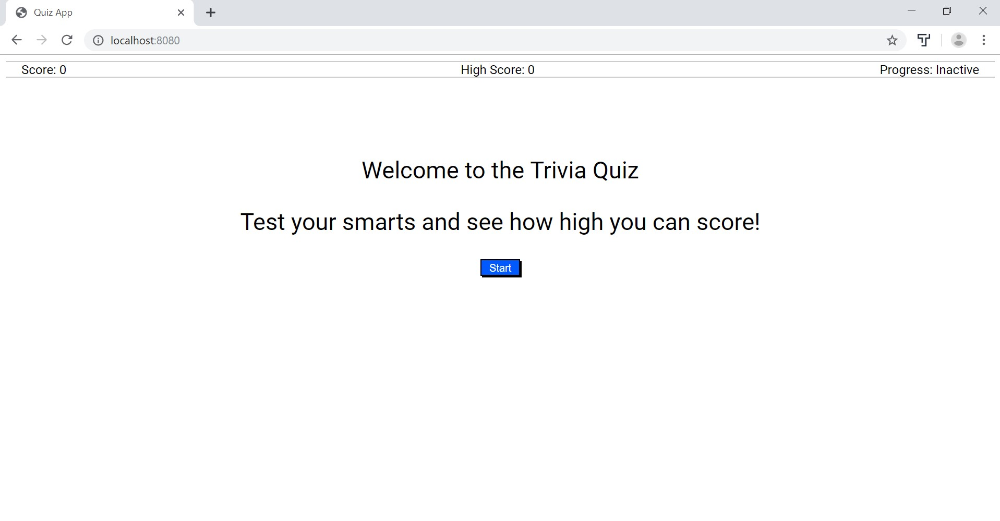

Hello, I’m Arpan, and I am an aspiring software developer.
I am currently enrolled in the Thinkful Engineering Immersion Program.

About Me
I was first exposed to developing in high school, where I was able to take AP Computer Science and Electrical Engineering. I found the material to be significantly appealing due to the logical and problem-solving nature of the field. The sense of struggle with a project made the feeling of accomplishment and gratification that much sweeter after seeing my work come to life. I wound up graduating college with a B.S. in Microbiology; however, after some time, I realized that my passion did not truly lie in that field. After thinking critically about my goals and my future, I realized that my heart lies within technology.
I circled back around to the feeling that I first felt in high school when I spoke to a friend of mine who previously graduated from a software developing boot camp and is now working at a genetics start-up in San Francisco. With his advice, I began completing lessons on FreeCodeCamp and enrolled in the Thinkful Prep-Course, where I readily realized that my true passion has always coincided with developing. I do not take my college education for naught as it still helped me foster and hone my work ethic, which in turn, I will be able to utilize for furthering my software developing education. I was able to find that feeling of accomplishment after struggling for hours again, and honestly, there is no better feeling. Also, having grown up playing team sports, playing varsity baseball in high school, performing on a collegiate level competitive dance team, and years of working with teams in laboratory settings, I am more than comfortable and excited to work with other passionate programmers on future projects. I am looking forward to continuing to struggle for hours and hours in the future, and even more so towards the sense of accomplishment after completing a project, minus about a pound of hair that I ripped out in the process.
When I’m not coding, I am a full-time dog dad, and he is a very good boy. Other than spending time with my dog, I am usually playing or watching (also likely screaming about) basketball, football, and baseball. Outside of coding and sports, my other passion is food. Now, I’m not classically trained by Le Cordon Bleu like those big wigs in NYC, but I’ve seen enough Chopped and MasterChef to make a meal out of whatever is available to me. If I get stuck, just like with coding, Google is my best friend. Also, due to my Indian background, I know my way around a spice cabinet, and so if the food is ever underseasoned, just know that I probably did not make it.
Projects
Quiz App
This app generates a 5 question trivia quiz that tracks your score and updates the high score as you progress through each quiz and throughout any subsequent quizzes by local session only. We use HTML, CSS, and jQuery to develop the engine for the quiz and fetch questions for each session using the API from Open Trivia Database.
Live | Repo